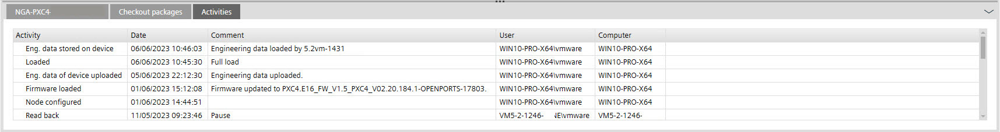
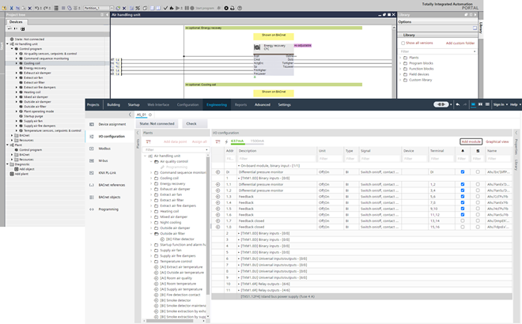
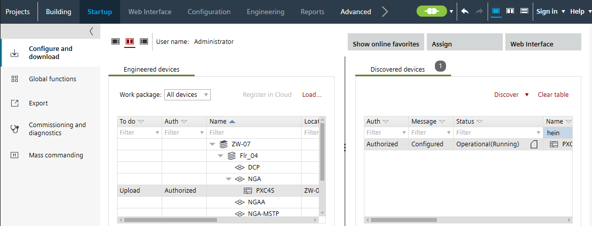
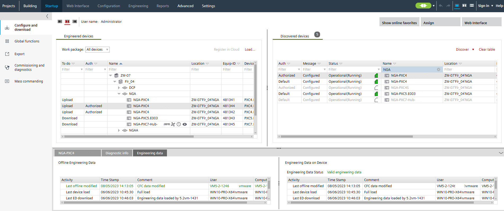

使用案例 2：离线 ABT 现场项目，其工程数据 (ED) 可在 PC /laptop 上使用

1. Uploading engineering data
- The ABT Site project is open and the engineering data are available on the device.
- Go to Startup.
- Open the Configure and download task.
- Click Connect
 .
. - The connection status changes to
 /
/  .
. - In the Discovered devices tab, select the device you want to upload.
Note: There may be two different timestamps displayed in the Activities tab. The user must decide whether to use the device data or the project data for further processing. - Right-click the device and select Upload engineering data.
- Engineering data are uploaded and displayed in the Engineering devices tab.
Note: Uploaded data overwrite existing engineering data. There is no merge between those data. - Current activities are displayed in the Activities tab.

显示设备的工程数据状态：
 Device does not support engineering data on device
Device does not support engineering data on device No engineering data after full download available
No engineering data after full download available Engineering data are outdated after play/pause function is used (upload of engineering data is still possible)
Engineering data are outdated after play/pause function is used (upload of engineering data is still possible) Engineering data are valid after full load
Engineering data are valid after full load

如果使用旧版本 ABT 站点设计的设备在Programming 编辑器，该设备的数据将自动转换。
2. Uploading parameter data
- In the Engineered devices tab, right-click the device and select Upload.
- The current parameters of the device are uploaded.
例如，在 Desigo CC 中创建的动态对象将被导入并保存在单独的项目文件夹中。动态对象在 ABT 站点中不可见，因此无法编辑。这些动态对象将在下次执行下载时下载。
3. Modify the engineering data
- Right-click the device and select Go to programming or Go to engineering.
- Modify the control program according to the project requirements.

程序修改后关闭编辑器时，系统会提示您将工程数据加载到设备中。如果用户选择Cancel，然后他将负责根据用户需求下载工程数据。
如果选择了 PXC4.E/M（内存较小）类型的一个或多个设备，则在下载开始之前会出现一条提示。此查询不适用于 PXC4E/M-2（更多内存）设备。
4. Engineering/commissioning
- Click Play
 or perform a full download.
or perform a full download. - A confirmation dialog displays.
- Click OK.
- The changed program is downloaded.
- Verify the changed program.
使用 play/pause 函数时，设备上工程数据的状态设置为Outdated engineering data。因此必须下载工程数据。
5. Download the engineering data
- A full download was performed successfully.
- The Engineering editor must be closed.
- Go to Startup.
Configure and download - Open the Configure and download task.
- In the Engineered devices tab, select the updated device.

- Click Load > Engineering data.
- The engineering data are downloaded.
- The engineering data status changed in the Discovered devices tab from to .
- The Engineering data tab shows that the engineering data are downloaded and valid.
